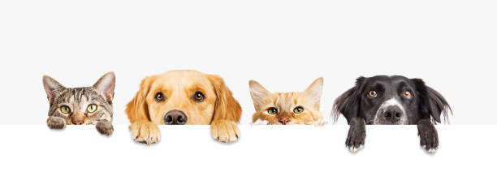

Допълнителна информация
Как да осиновиш?
Осиновяването на животно е един от най-големите актове на състрадание и любов. Ето как можеш да осиновиш нашите питомци:
- Посети нашия приют или разгледай животните на нашия уебсайт.
- Избери животно, което искаш да осиновиш.
- Попълни форма за осиновяване и ни изпрати всички необходими документи.
- След като одобрим заявката ти, ще проведем среща, за да се запознаеш с животното.
- След успешната среща, ще подпишеш договор за осиновяване.
Осиновяването е отговорност и е важно да осигуриш дом и грижи за животното. Ако имаш въпроси, не се колебай да се свържеш с нас!
Как да дариш?
С всяко дарение помагаш за подобряване на условията на живот за бездомните животни. Ето как можеш да дариш:
- Дарение с поръчка на храна: Можеш да поръчаш храна за животните. Моля свържи се с нас за повече информация относно нуждите ни.
- DMS дарение: Изпрати текст "DMS ANIMAL" на номер 17 777 и подкрепи нашата кауза! Цена 1лв с ДДС за клиенти на А1, Виваком и Yettel на месечен договор, 1.20 за абонати на предплатени услуги. Може да има месечен абонамент. Повече информация тук
- Дарение с кутии: Можеш да поставиш кутии за дарения в различни търговски обекти, които ще събират средства за нашите животни. Свържи се с нас за повече информация относно разпределението на кутии.
- Изпращане на дарение през офис на Еконт: Можеш да изпратиш дарение в наш офис чрез Еконт. Моля, свържи се с нас, за да ти предоставим подробности за начина на даряване и адреса на офиса.
Без вашата помощ ние не можем да продължим нашата работа. Благодарим ви за подкрепата!
Как да станеш доброволец?
Ако искаш да помогнеш лично, можеш да станеш доброволец в нашата организация. Това е чудесен начин да се включиш в нашата работа и да помогнеш на бездомните животни. Ето как можеш да станеш част от екипа ни:
- Кандидатстване онлайн: Попълни формата за доброволци на нашия сайт и ни изпрати данните си.
- Кандидатстване лично: Можеш да се свържеш с нас по телефона или да посетиш нашия офис.
- Подпомагане на събития: Можеш да участваш в събития, организирани от нас, като помагаш с логистика, разпространение на информационни материали и други.
Ще ти осигурим нужните обучения и материали, за да можеш да помогнеш ефективно и безопасно.